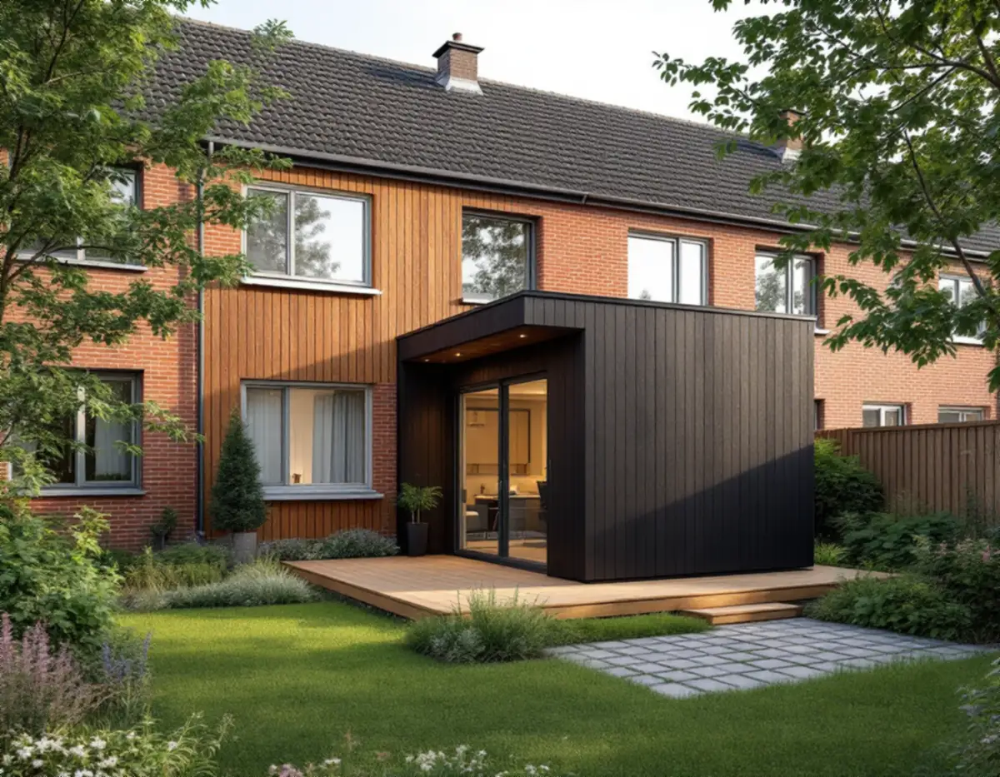
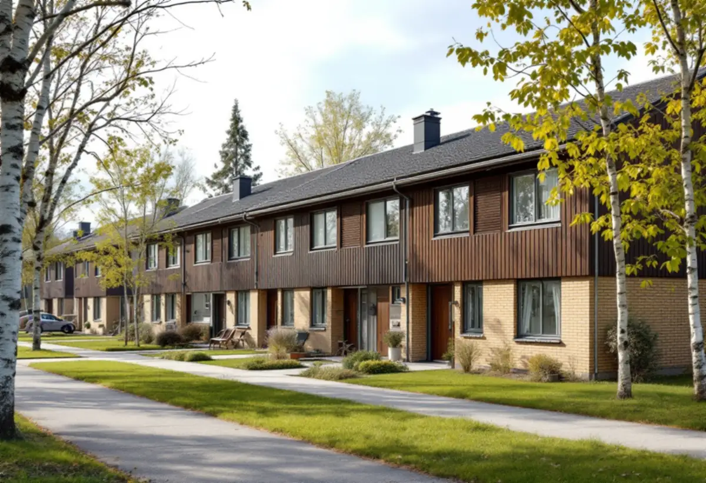
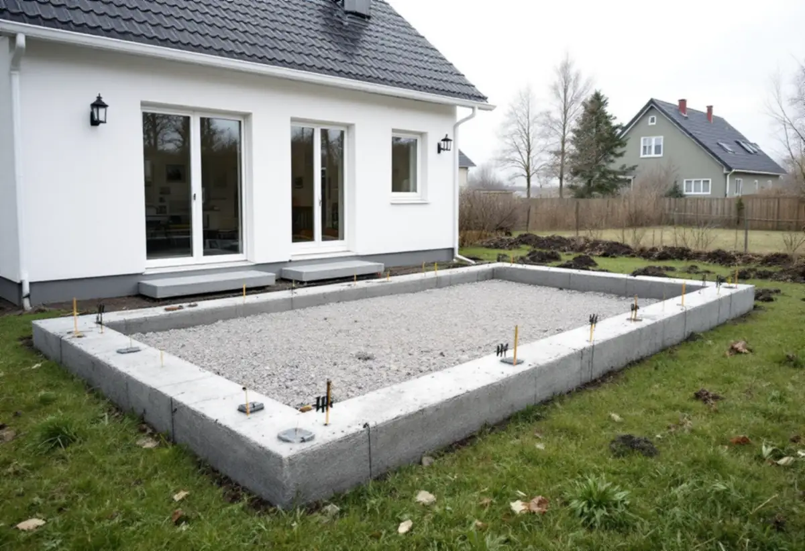

Platsbesök
Gratis besök där vi tittar på tomten och husgruppen.

Småhusen i Kista och Akalla är till stor del radhus och kedjehus i husgrupper, och många av dem är bostadsrätter.
Beskriv jobbet kort.
Något blev fel. Kontrollera uppgifterna eller ring 08 12 410 276.
Vi tittar på jobbet på plats innan du får offert.
Du ser vad som ingår och vad det kostar.
Vi drar av ROT direkt och sköter ansökan.
Geal Entreprenad AB, Bromma. Org.nr 559303-7566.

Det avgör vem som kan bygga ett gårdshus. Geal Entreprenad AB bygger attefallshus och hjälper dig att reda ut ägande, mått och medgivanden först.
Stadens områdesfakta för 2025 räknar i Kista 482 småhus med äganderätt och 404 som är bostadsrätter. I Akalla är förhållandet det omvända: 170 småhus med äganderätt och 493 bostadsrätter. Därtill finns 75 småhus i Kista som ägs av allmännyttan och hyrs ut.
Äger du huset och tomten kan du själv vara byggherre för ett komplementbostadshus. Är radhuset en bostadsrätt är det föreningen som äger fastigheten, och ett nytt hus på marken är en fråga för föreningen och inte för den enskilda medlemmen. Hyr du ett småhus kan du inte bygga på tomten. Vi tar därför reda på upplåtelseformen innan vi ritar något.

Stadsmuseets skrift om Kista berättar att staden köpte marken 1966 och att Kista byggdes ut under åren 1975–1980, med friare arkitektoniska former än i de andra stadsdelarna på Järvafältet. Akalla och Husby räknas i stadens vägledning Varsam utveckling av småhus- och villaområden till de storskaliga stadsdelarna med gruppbyggda småhus.
Vägledningen beskriver radhus och kedjehus i strikt grupperade längor, där enhetligheten inom husgrupperna var mycket stor och färgsättningen noga komponerad. I Akalla finns också villor och atriumhus. Ett gårdshus som syns från gången bör därför ta upp husgruppens material och kulör, även när det får byggas utan lov.
Stockholms stad ställer upp flera villkor för ett lovfritt komplementbostadshus: högst 30,0 kvadratmeter byggnadsarea, en taknock på högst 4,0 meter och en byggnadsarea som är mindre än huset det ska komplettera. På tomten får komplementbyggnader och komplementbostadshus som byggts utan lov tillsammans uppta högst 45,0 kvadratmeter.
Villkoret om att vara mindre än huvudbyggnaden blir verkligt vid ett radhus, där husets egen byggnadsarea kan vara liten. Vi räknar på radhusets byggnadsarea och på bodar och förråd som redan finns innan vi föreslår en storlek. Mer om grunderna finns i reglerna för attefallshus.
Huset ska stå 4,5 meter från tomtgränsen. Närmare krävs ett skriftligt medgivande från grannen, och gränsar tomten mot en gångväg eller park som staden förvaltar är det staden som ska medge.
Ska gårdshuset få vatten och avlopp, ventilation eller en eldstad krävs en anmälan och startbesked. Där fastigheten omfattas av skyddsbestämmelser eller ligger i ett särskilt kulturhistoriskt värdefullt område krävs bygglov, och det visar Stadsmuseets klassificeringskarta.
Stockholms stad skriver att ett komplementbostadshus som inte kräver lov får strida mot detaljplanen och till exempel placeras på mark som inte får bebyggas, så kallad prickmark. Det ger ibland ett läge på tomten som annars inte hade gått, men avståndet till gränsen och medgivandena gäller fortfarande.
Vill du senare bygga till gårdshuset får det enligt staden ske utan lov bara om huset efter tillbyggnaden fortfarande är högst 30,0 kvadratmeter och 4,0 meter högt och mindre än huvudbyggnaden. Tillbyggnadens yta räknas in i de 45,0 kvadratmetrarna. Vi ritar därför gärna huset i full storlek från början om tomten tillåter det.
Gratis besök där vi tittar på tomten och husgruppen.
Äganderätt, förening eller hyresrätt – vem är byggherre?
Byggnadsarea mot huvudbyggnaden och befintliga bodar.
Grannar och staden där huset kommer närmare än 4,5 meter.
Startbesked för vatten, avlopp och ventilation.
Grund, stomme, installationer och slutbesked.
Skatteverket ger inget rotavdrag för att bygga en ny bostad eller ett nytt fristående hus som en friggebod eller ett garage. Ett komplementbostadshus står fritt på tomten, och kostnadsförslaget räknas därför utan avdrag.
Husets storlek och planlösning, grunden, hur långt vatten och avlopp ska dras, åtkomsten till tomten från gångvägen och om bygglov behövs. Efter ett gratis platsbesök får du ett skriftligt kostnadsförslag.
Komplementbostadshus på tomten.
Attefallshus →Takbyte, takbesiktning och plåtarbeten.
Takläggare i Kista →Låga tak, tätskikt och takbrunnar från 1970-talet.
Takrenovering i Kista →Radhusen, föreningen och ventilationen.
Badrumsrenovering i Kista →Uterum, altan och föreningens tillstånd.
Byggföretag i Kista →Radhus, atriumhus och husgruppen.
Fasadmålning i Kista →Panel, skivor och isolering på radhus.
Fasadrenovering i Kista →Radhus och villor från 1970-talet.
Fönsterbyte i Kista →1970-talets radhusfönster.
Fönsterrenovering i Kista →Nya golv på betong i radhus och lägenheter.
Golvläggare i Kista →Golvslipning i bostadsrätt, hyresrätt och radhus.
Golvslipning i Kista →Småhus i förening och kök från 1970-talet.
Köksrenovering i Kista →1970-talets hus, asbest och ROT.
Målare i Kista →Rännor, stuprör och beslag.
Plåtslagare i Kista →Garderober, väggar och dörrar i lägenheten.
Snickare i Kista →Platta tak och pulpettak.
Takbyte i Kista →Lägenheter och radhus från 1970-talet.
Tapetsering i Kista →Tillbyggnad vid radhus och villor.
Tillbyggnad i Kista →Renovera hela huset eller lägenheten.
Totalrenovering i Kista →Eller ring 08 12 410 276, mån–fre 08–17.
Beskriv jobbet kort.
Något blev fel. Kontrollera uppgifterna eller ring 08 12 410 276.